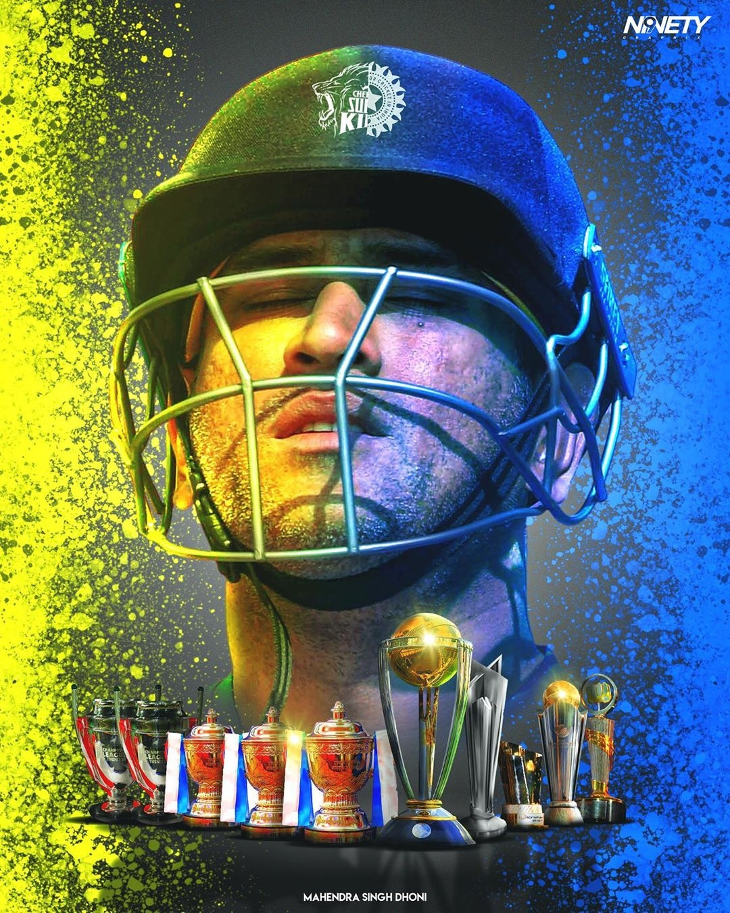
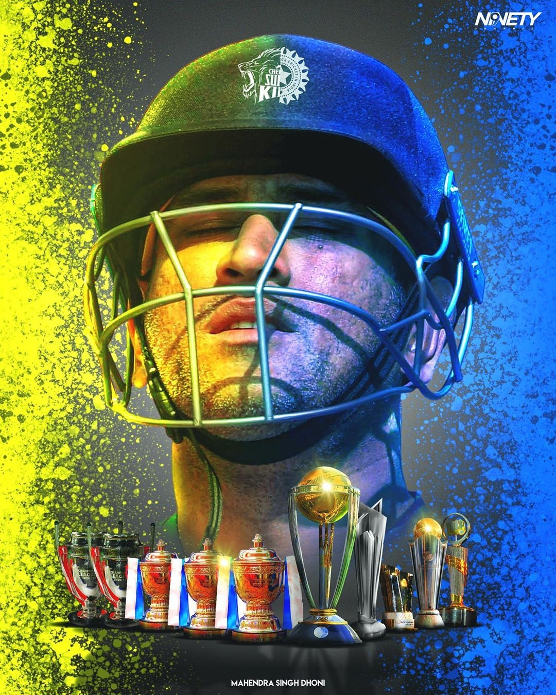

Introduction
Mahendra Singh Dhoni, commonly known as MS Dhoni, is a renowned Indian cricketer, a former captain of the Indian national team, and the current captain of the Chennai Super Kings in the Indian Premier League. He is widely recognized for his exceptional leadership, calm demeanor, and ability to finish matches with explosive batting, as well as his impressive wicketkeeping skills

 
